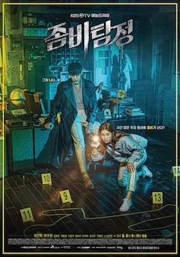

Zombie Detective merupakan drama Korea tahun 2020 yang menggabungkan genre zombie, komedi, misteri, dan kriminal. Drama ini menghadirkan konsep unik tentang seorang zombie yang berusaha hidup seperti manusia dan bekerja sebagai seorang detektif swasta.
Kim Moo-young terbangun sebagai zombie tanpa ingatan mengenai masa lalunya. Berbeda dengan zombie pada umumnya, ia mencoba memahami kehidupan manusia dengan belajar berbicara, berjalan normal, dan menyembunyikan identitasnya.
Untuk mencari jawaban tentang dirinya sendiri, Moo-young mengambil alih sebuah kantor detektif swasta. Dalam perjalanan tersebut ia bertemu Gong Sun-ji, seorang mantan penulis acara investigasi yang membantu mengungkap misteri masa lalu Moo-young.
Cerita dimulai ketika Kim Moo-young kembali hidup sebagai zombie akibat sebuah kejadian misterius. Ia menyadari bahwa dirinya tidak memiliki ingatan dan harus mencari tahu penyebab perubahan tersebut.
Dengan kemampuan fisik luar biasa, Moo-young mulai menyelesaikan berbagai kasus kriminal. Namun semakin banyak kasus yang ia pecahkan, semakin dekat pula ia dengan rahasia besar tentang identitas aslinya.
Zombie Detective (2020) adalah drama Korea dengan konsep segar yang berhasil menggabungkan humor, misteri, dan kisah emosional. Serial ini memberikan sudut pandang berbeda tentang karakter zombie dan menjadi tontonan menarik bagi pecinta drama Korea.
Nonton Film Online